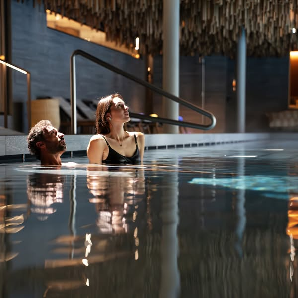
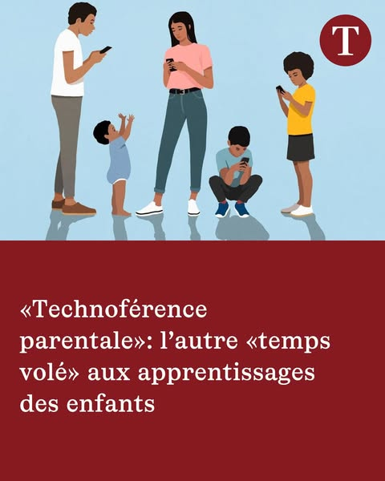
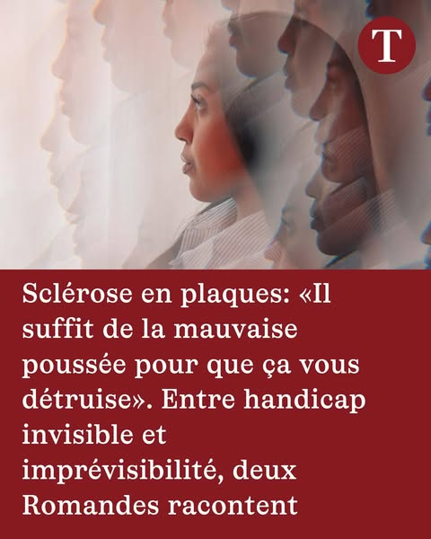
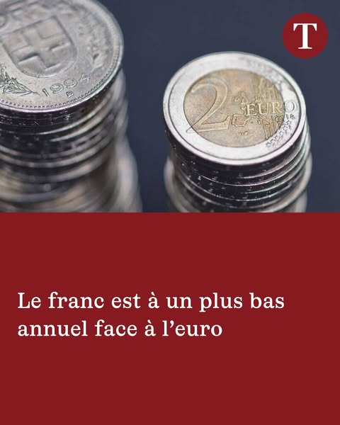
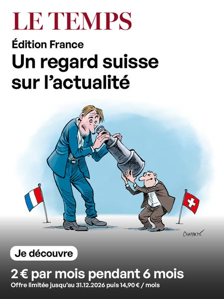
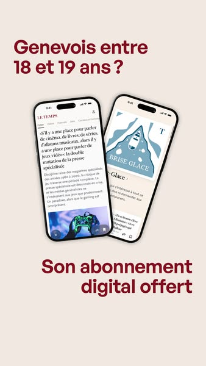
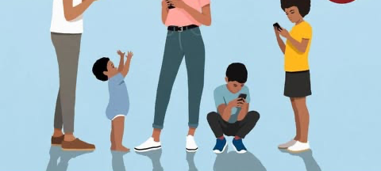
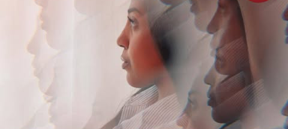
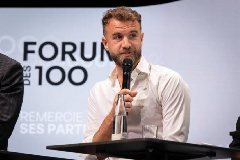

30,000 subscription apps taught us what moves conversion. Here’s what we’d test first at Le Temps.
Adapty runs subscriptions for more than 30,000 apps, so we see which onboarding and paywall changes lift revenue across the whole market, not just inside one app.
We pointed that at Le Temps. We took your own screens, copy and prices from your Swiss App Store listing, its screenshots and in-app purchases, letemps.ch and your Meta ads (we have no recording of the app, so every screen is a proposal in your design), and rebuilt the path from install to paywall around the five ideas with the most potential.
30,000+apps run their subscriptions on Adapty
5ideas, each built as a working screen
0changes to your art direction
Five ideas, not fifteen
We’re not proposing to rebuild every screen. These are the changes with the highest potential, ranked by what we’d test first.
Your design, not ours
Every colour, control and price in the prototype is Le Temps’s. We changed the order and what gets shown.
We hope you haven’t tried these yet
We work from the outside, so we can’t see your live flow or your test history. If you’ve already run one of these, tell us and we’ll go deeper on the rest.
The shortlist
Five ideas. Ranked by what we’d test first.
Potential outcome, based on Adapty data
Together they work on three moments: what you ask on the first open, what the wall says, and what happens when someone says not yet.
Your newest ads sell single stories. None of them opens the app.
The Le Temps page runs 44 active ads in the Meta Ad Library on 11 November, in 58 versions. Your newest ones, started on 9 and 10 November, each sell one story: screens and children, a column on Geneva, two women living with multiple sclerosis. Every one links to letemps.ch, where the article stops after its opening at “La suite de cet article est réservée à nos abonnés”.
Your app sells the same journalism “dès 29 CHF par mois”. Flow Builder can open a different first screen by the campaign the install came from, so a reader from the Geneva column lands on that column, with Opinions already in their Une. Below, your three newest stories, sent to the app instead of the web.
44active Le Temps ads in the Meta Ad Library, in 58 versions
0of them link to the App Store: every one opens letemps.ch or a form
1first screen in the app for every reader today, whichever ad they saw
Your ads, sorted by promise
Share of the 58 ad versions on the Le Temps page, Meta Ad Library, all countries, 11 Nov 2026
Partner content · 33Society and families · 3Columns · 2Health and science · 1Economy, Switzerland and culture · 4Édition France · 9Offers through a form · 6

Most versions · newest 10 Nov33 versions
“Ski, panoramas alpins et activités hivernales : un aperçu de l’hiver sur le Haut-Plateau de Crans-Montana.”
21 ads since 20 Oct 2026, most marked “Le Temps with” Crans-Montana, Switzerland, Fribourg or Raiffeisen; also Fielmann and Centre Patronal · to letemps.ch and partner sites
In the ad
Travel, health and finance pieces made with partners: Crans-Montana, the Engadine, Gstaad, Fribourg, Raiffeisen, Fielmann.
The promise
A partner’s story.
Today it lands on
The partner’s page on letemps.ch, or the partner’s own site.
No phone: these sell the partner, not a subscription.

Newest · started 10 Nov3 versions
“La distraction des parents par leurs usages numériques devient un sujet de santé publique.”
3 ads since 13 Oct 2026: screens and children (10 Nov), repairing a couple (9 Nov), violence in yoga · Learn more · each to its article
In the ad
A family, every one of them on a phone, over “«Technoférence parentale»: l’autre «temps volé» aux apprentissages des enfants”.
The promise
This story, in full.
Today it lands on
The article on letemps.ch, behind “La suite de cet article est réservée à nos abonnés.”
Started 9 Nov2 versions
“CHRONIQUE. Genève est un miracle.”
2 ads, both 9 Nov 2026: Alexis Favre on Geneva, and “En amour, ce qui compte…” · Learn more · each to its column
In the ad
Geneva from the air, over “God bless Geneva”.
The promise
This column, in full.
Today it lands on
The column on letemps.ch, behind the same wall.

Started 9 Nov1 versions
“Maud * et Rubyna, deux jeunes femmes atteintes de cette maladie chronique auto-immune, témoignent…”
1 ad, 9 Nov 2026 · Learn more · to the article
In the ad
A woman’s face in profile over “Sclérose en plaques: «Il suffit de la mauvaise poussée pour que ça vous détruise»”.
The promise
Their story, in full.
Today it lands on
The article on letemps.ch, behind the same wall.

Since 28 Sep4 versions
“Après une période de hausse, la monnaie helvétique a atteint un plus bas depuis août 2025.”
4 ads since 28 Sep 2026: the franc, young graduates out of work, the Crans-Montana proceedings, autumn theatre · Learn more · each to its article
In the ad
A photo over the headline in your red box, like the three above.
The promise
This story, in full.
Today it lands on
The article on letemps.ch, behind the same wall.
No phone of its own: each would open the flow above with its own theme ticked.

Subscription · newest 3 Nov9 versions
“Le regard Le Temps appliqué à la France.”
9 ads since 26 May 2026, also “Le Temps édition France: un regard suisse sur l’actualité” · Subscribe · to letemps.ch/abonnements/edition-france
In the ad
Two cartoon figures under the French and Swiss flags: “Un regard suisse sur l’actualité”, “2 € par mois pendant 6 mois”.
The promise
A Swiss view of the news, for 2 € a month.
Today it lands on
The France offer page on letemps.ch.
No phone: it sells a web offer in euros, which isn’t in your Swiss in-app list.

Since 13 Oct6 versions
“Gratuit: un abonnement digital au journal Le Temps 💥”
3 ads since 13 Oct 2026 for 18-year-olds in Geneva, “offert par l’Etat de Genève”, and “📢 3 journaux pour le prix de 1!” for businesses (31 Oct) · Get Offer · to a form on Facebook
In the ad
A free digital subscription for Geneva’s 18-year-olds; three papers for the price of one for restaurants and hotels.
The promise
A subscription that someone else pays for, or a deal for a business.
Today it lands on
A form, not a reader flow.
No phone: these collect sign-ups through a form.
We read every active ad from the Le Temps page and grouped them by what they promise; counts are ad versions, not spend. The three newest stories get a phone of their own below. Partner content and the offers sold through a form stay on the web.
Three ads, three flows
Left to right: a reader from your newest ads, on screens and children (10 Nov), on Geneva (9 Nov) and on multiple sclerosis (9 Nov). Tap Today: letemps.ch to see where all three land now, then tap through the proposal, or jump straight to an idea.
Meta adLa distraction des parents par leurs usages numériques…
Loading the flow…
Meta adCHRONIQUE. Genève est un miracle…
Loading the flow…
Meta adMaud * et Rubyna, deux jeunes femmes…
Loading the flow…
Tap through any phone and the others follow. A dot marks the screens that differ by ad.
Day 1
Pass the Meta campaign into Adapty
Run an App Store version of your story ads. After a one-time SDK setup, the campaign each install came from arrives as a user attribute and picks the flow at first open. No app release.
Week 1
One flow per story
Each new story ad opens its own article first, with its section ticked; partner content and the form offers stay on the web.
Week 2
Judge each ad on subscriptions
Each ad’s app flow against the web page it opens today, measured on trials, paid subscriptions and what each install from that ad earns, so spend follows the stories that pay.
All three phones run the whole flow with all five ideas. Today all 44 ads link to letemps.ch or a form, so these phones are a proposal: the ads stay, the destination changes. On the web, Digital is “CHF 9.- le premier mois au lieu de CHF 29.- / mois”; in the app it is CHF 29.– from the first month, so a reader who subscribes in the app pays CHF 20 more. Your France ads sell “2 € par mois pendant 6 mois” on the web. We found no Apple Ads for Le Temps. This layer carries no range: only a test per ad can give one.
The prototype
Every idea, inside your own onboarding.
Tap through it like a new user, or jump straight to an idea. Numbered dots mark the screens that carry one.
The ad they saw
Prototype language
9:41●●● ▮
Le TempsSponsored
···
La distraction des parents par leurs usages numériques devient un sujet de santé publique. Des spécialistes appellent à créer des zones sans écran, pour les adultes aussi, à la maison
LETEMPS.CH«Technoférence parentale»: l’autre «temps volé» aux apprentissages des enfants - Le Temps
CHRONIQUE. Genève est un miracle. A l’école, au cycle d’orientation, au collège, il s’y trouve une mixité qui n’existe nulle part ailleurs et qui crée des réseaux aussi multicolores qu’improbables. J’aime infiniment ma ville, et rien n’est perdu, écrit Alexis Favre
LETEMPS.CHGod bless Geneva - Le Temps
Maud * et Rubyna, deux jeunes femmes atteintes de cette maladie chronique auto-immune, témoignent d’un quotidien fait de crises inopinées et de séquelles variables. Des chercheurs bâlois ouvrent la voie à une meilleure prédiction de la progression de cette pathologie
LETEMPS.CHSclérose en plaques: «Il suffit de la mauvaise poussée pour que ça vous détruise». Entre handicap invisible et imprévisibilité, deux Romandes racontent - Le Temps
◯
Bienvenue
Votre article sur la «technoférence parentale» vous attend en tête de votre Une.
La chronique d’Alexis Favre, «God bless Geneva», vous attend en tête de votre Une.
Votre article sur la sclérose en plaques vous attend en tête de votre Une.
Vos thèmes
Choisissez-en au moins trois: ils passent en tête de votre Une et de «Mes contenus».
◯
Pour vousÀ la uneEn continuSuisse
Vos thèmes:
T«Technoférence parentale»: l’autre «temps volé» aux apprentissages des enfants

Société · Lire ›
TGod bless Geneva
Opinions · Lire ›
TSclérose en plaques: «Il suffit de la mauvaise poussée pour que ça vous détruise». Entre handicap invisible et imprévisibilité, deux Romandes racontent

Sciences · Lire ›
TDe Giotto à Apertus, la Suisse améliore ses modèles d’intelligence artificielle pour tenter de participer à la course mondiale

T«J’ai besoin d’un espace de repli»: pourquoi les jeunes générations revendiquent le célibat et réinventent le couple
il y a une heure · Lire ›
T«Nous ne pouvons plus attendre»: la Suisse doit urgemment définir une stratégie numérique, alertent des chercheurs
⌂À la Une▭Mes contenus▤E-Paper
⇪ ◻
«Technoférence parentale»: l’autre «temps volé» aux apprentissages des enfants
La distraction des parents par leurs usages numériques devient un sujet de santé publique. Des spécialistes appellent à créer des zones sans écran, pour les adultes aussi, à la maison…
God bless Geneva
CHRONIQUE. Genève est un miracle. A l’école, au cycle d’orientation, au collège, il s’y trouve une mixité qui n’existe nulle part ailleurs et qui crée des réseaux aussi multicolores qu’improbables. J’aime infiniment ma ville, et rien n’est perdu, écrit Alexis Favre…
Sclérose en plaques: «Il suffit de la mauvaise poussée pour que ça vous détruise». Entre handicap invisible et imprévisibilité, deux Romandes racontent
Maud * et Rubyna, deux jeunes femmes atteintes de cette maladie chronique auto-immune, témoignent d’un quotidien fait de crises inopinées et de séquelles variables. Des chercheurs bâlois ouvrent la voie à une meilleure prédiction de la progression de cette pathologie…
TCet article est réservé aux abonnés.
Lisez la suite, et tout Le Temps
Une rédaction de 150 journalistes et correspondants, en Suisse et à l’étranger.
★★★★★ 4,6 · 4 363 notes sur l’App Store suisse
Abonnez-vous au Temps
Vos thèmes, sans limiteet tous nos contenus en ligne: actualité, reportage, vidéo, podcast
Le journal en PDFL’e-paper, le magazine T et les suppléments thématiques
Le programme PrivilègesDes événements et des avantages réservés aux abonnés
Digital + ePaperSans engagement, résiliable à tout moment
CHF 29.–/mois
★ 4,6 ·4 363 notes en Suisse · 150 journalistes
Renouvellement automatique chaque mois. Résiliable dans les Réglages de votre iPhone.
Pas encore décidé?
Écoutez la rédaction avant de choisir: un épisode de nos podcasts, offert.
Bienvenue parmi nos abonnés
Recevez une alerte quand vos thèmes bougent. Rien d’autre.
Suisse
Monde
Économie
Politique
Opinions
Culture
Sciences & tech
Sport
Société
🔒 letemps.ch
☰
Société · Enfants & Parentalité · Réservé aux abonnés
«Technoférence parentale»: l’autre «temps volé» aux apprentissages des enfants
La distraction des parents par leurs usages numériques devient un sujet de santé publique. Des spécialistes appellent à créer des zones sans écran, pour les adultes aussi, à la maison
Opinions · Chroniques · Réservé aux abonnés
God bless Geneva
CHRONIQUE. Genève est un miracle. A l’école, au cycle d’orientation, au collège, il s’y trouve une mixité qui n’existe nulle part ailleurs et qui crée des réseaux aussi multicolores qu’improbables. J’aime infiniment ma ville, et rien n’est perdu, écrit Alexis Favre
Sciences · Santé · Réservé aux abonnés
Sclérose en plaques: «Il suffit de la mauvaise poussée pour que ça vous détruise». Entre handicap invisible et imprévisibilité, deux Romandes racontent
Maud * et Rubyna, deux jeunes femmes atteintes de cette maladie chronique auto-immune, témoignent d’un quotidien fait de crises inopinées et de séquelles variables. Des chercheurs bâlois ouvrent la voie à une meilleure prédiction de la progression de cette pathologie
Déjà un compte ? Se connecter
La suite de cet article est réservée à nos abonnés.
Soutenez un journalisme indépendant et accédez à l’intégralité de nos articles pour seulement CHF 9.– le premier mois.
‹›⇪▢⧉
Close the offer with ✕ to see idea 4; subscribe to see idea 5.
Try it on your phone
Scan to open the prototype full screen, the way a new user would see it.